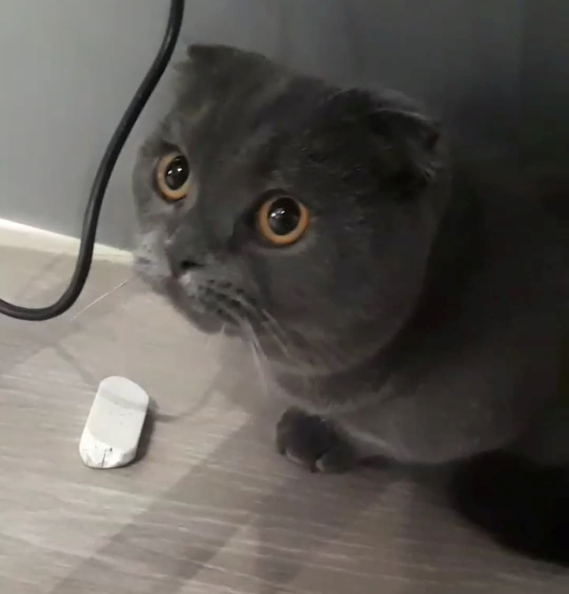

Autography
Hi, my name is Ting Yi, Wu. I studied in SongShan senior high school
(SSSH).
And now I major in electrical engineering, in the best university in Taiwan
(NTUEE).
In the following hobbies are something more about me:
- I love playing basketball so much and started playing it when
I was just a junior high school student.
I also watched NBA sometimes, and the team I like the most is Golden
State Warriors
(GS).
I believe that they'll be the NBA champion this year!
- I have worked out for several years since I was in the senior high school.
In the beginning, I watched some videos on Youtube to learn how to start working out, and one of my
favorite channel is "Fitting Room TW". With
their videos, I got to improve a lot in a short time, learning the correct training ways and
concepts.
- I also like playing guitar, but I just started learning recently and I still a rookie. I watch some
teaching videos on Youtube to learn how to play, and the channel that I watch the most is
"老徐彈吉他".
Although in this semester I have less time to play guitar, but it is still one of ways for me to
relax and relieve stress.
In addition, I'm a crazy catlover, I surf on Instagram for watching a large number of phots about cats.
My aunt even have four cats, they are so adorable that I often visit them and playing with them.
Take a look at one of them that I think the cutest one.
